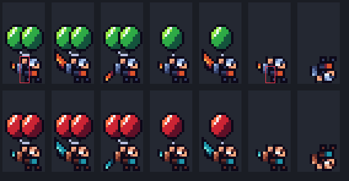
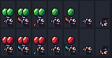
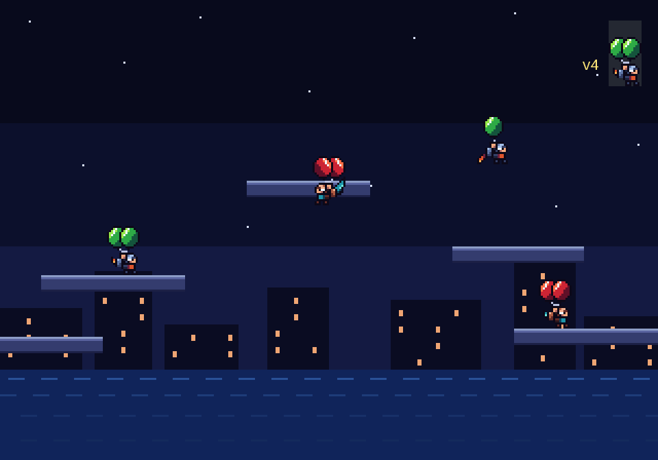

Strings fixed: both pod strings meet at one point on the body centre line, just above the raised hand, forming a V to the bottom centre of each pod. No pack, tank or thruster on any back: no tails, only a slim wing. Round 5: bigger pods (10 wide, 11 tall, overlapping 4 columns) sitting low so the strings are only 2 to 3 px long. Art 16 x 24 px in a 16 x 32 slot (one column, two tiles), pods side by side above the head, chibi body, short strings. Side view facing right. Hand-placed pixels, 3x night arena mock; the small figure in the corner of each scene is the v4 flier at the same scale. Pick one.
Soot imp in profile: round goggled head under a cap, wide stance, no tail; a scalloped bat wing flares ember orange; lime gas pods.
Size: art 16 x 24 px, rows 8 to 31 of a 16 x 32 slot (rows 0 to 7 empty), feet on row 31. Hitbox 4 x 11 with pods, 4 x 7 without: art columns 6 to 9, bottom edge on row 31; red outline on the 4x sheet marks it (glide with 2 pods, glide with 0 pods).
Palette: 15 colours plus transparent. Computer opponent swaps body ramps and pod hue, same sprite.
Sheet columns: glide (2 pods), flap up, flap down, glide (1 pod), flap up (1 pod), glide (0 pods), falling. Top row player, bottom row computer.


1x sheet